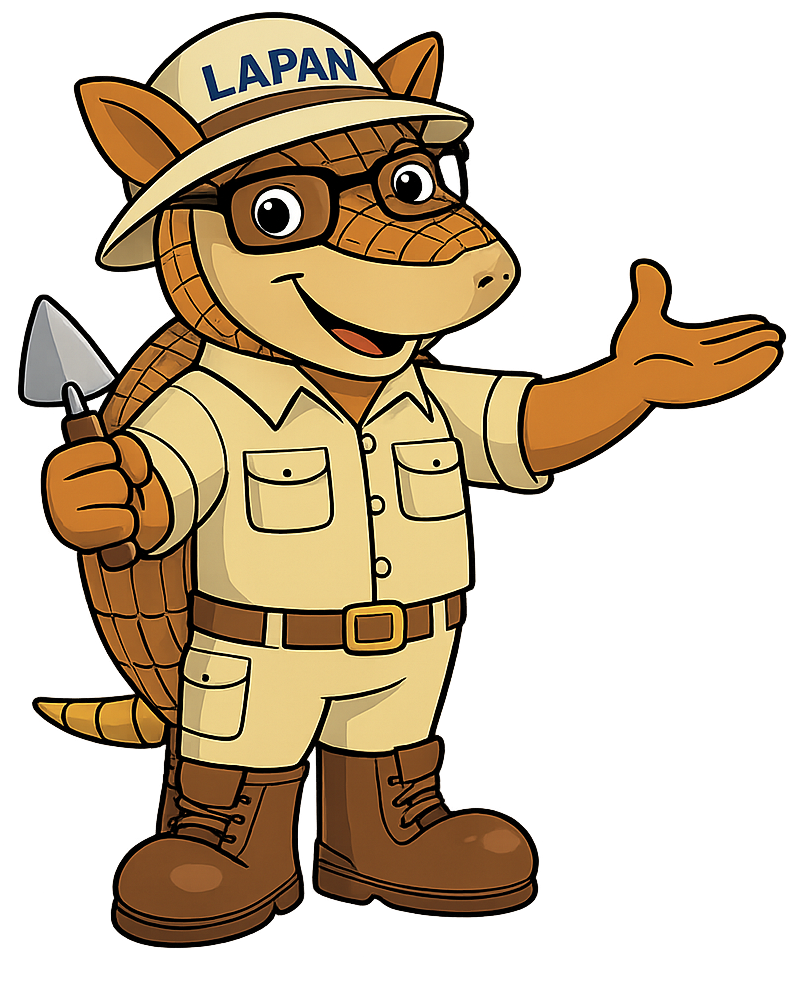

Unidade voltada à pesquisa arqueológica e preservação do patrimônio cultural.
Estamos localizados na Unidade III – Porto Geral, Corumbá/MS.
Visitas monitoradas para escolas, pesquisadores e interessados.

O Laboratório de Arqueologia do Pantanal é dedicado ao estudo das culturas que habitaram a região sul-mato-grossense.
Trabalhamos para preservar o patrimônio arqueológico, incentivar a pesquisa científica e promover a educação patrimonial.
Saiba maisProduzir conhecimento arqueológico no Pantanal e compartilhar suas histórias, fortalecendo a identidade cultural da região.
Projetar a arqueologia pantaneira como referência em educação patrimonial, ampliando seu alcance para além das fronteiras.
Compromisso com a memória, ética científica, inclusão social e valorização das expressões culturais.